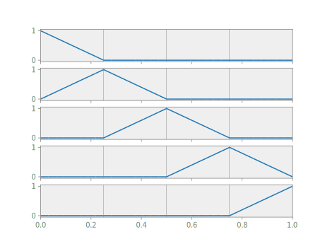
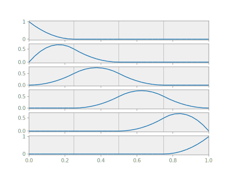
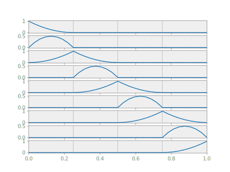
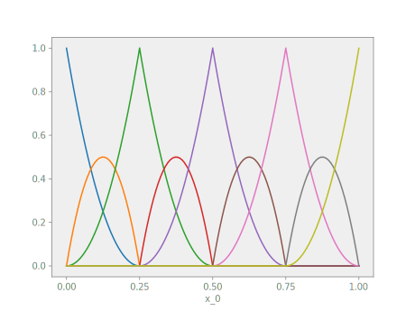
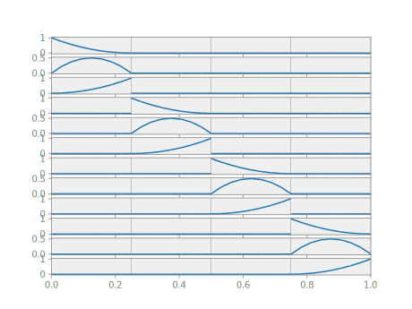

Bases
In Nutils, a basis is a vector-valued function object that evaluates, in any given point on the topology, to the full array of basis function values . It must be pointed out that Nutils will in practice operate only on the basis functions that are locally non-zero, a key optimization in Finite Element computations. But as a concept, it helps to think of a basis as evaluating always to the full array.
Several nutils.topology.Topology objects support creating bases via the
Topology.basis() method. A nutils.topology.StructuredTopology, as generated
by nutils.mesh.rectilinear, can create a spline basis with arbitrary degree
and arbitrary continuity. The following generates a degree one spline basis on
our previously created unit line topology topo:
basis = topo.basis('spline', degree=1)
The five basis functions are
myplot(topo, geom, basis)

We will use this basis throughout the following sections.
Change the degree argument to 2 for a quadratic spline basis:
myplot(topo, geom, topo.basis('spline', degree=2))

By default the continuity of the spline functions at element edges is the
degree minus one. To change this, pass the desired continuity via keyword
argument continuity. For example, a quadratic spline basis with
continuity is generated with
myplot(topo, geom, topo.basis('spline', degree=2, continuity=0))

continuous spline bases can also be generated by the 'std' basis:
myplot(topo, geom, topo.basis('std', degree=2))

The 'std' basis is supported by topologies with square and/or triangular
elements without hanging nodes.
Discontinuous basis functions are generated using the 'discont' type, e.g.
myplot(topo, geom, topo.basis('discont', degree=2))
